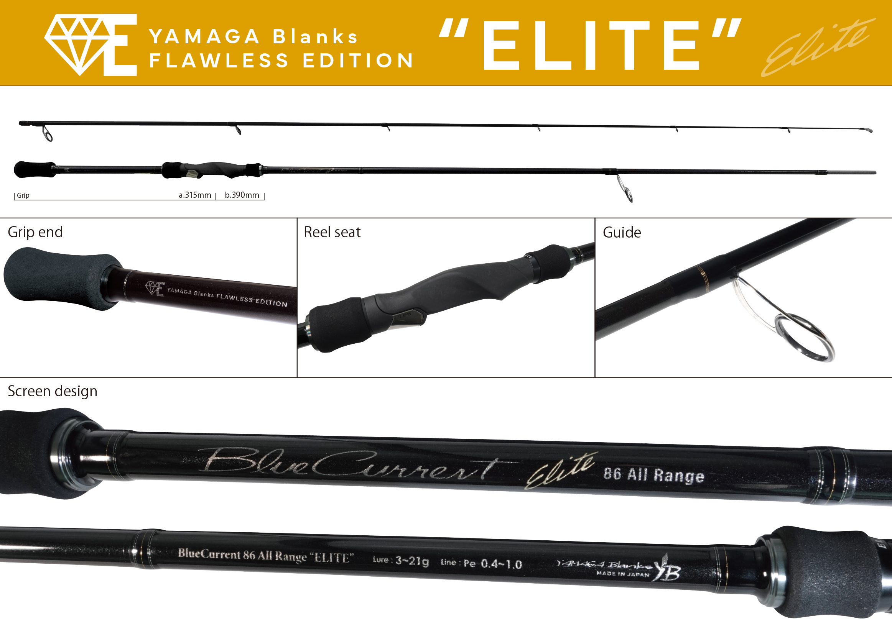
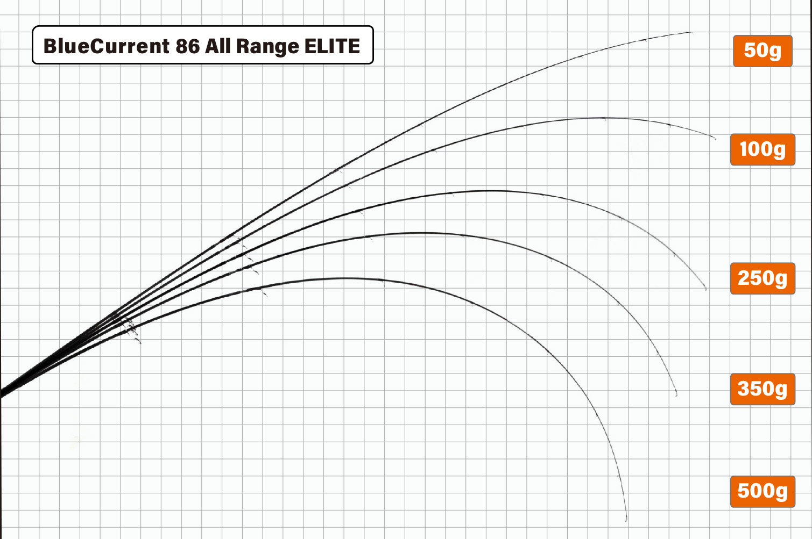
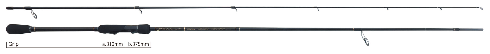
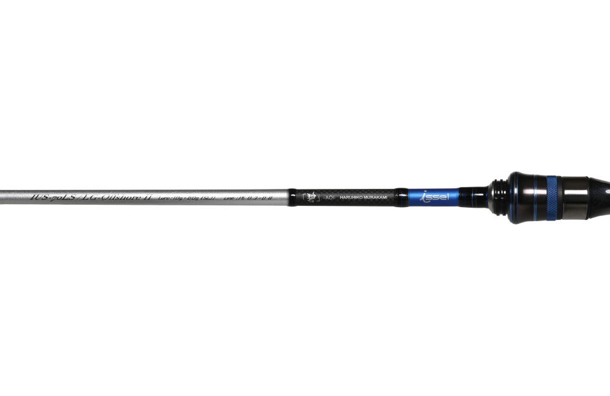

ブルーカレント86 オールレンジ エリート
（BlueCurrent 86 All Range “ELITE”）
ブルーカレント86 オールレンジ エリートは、ヤマガブランクスのライトゲームロッドです。
「なんでも」できるブルーカレント・オールレンジを、斬れ味鋭いシャープなブランクと一新したグリップで「戦闘仕様」に生まれ変わらせたスペシャルモデル。ヤマガブランクスの「FLAWLESS EDITION」の1本で、より繊細でマニュアル的な釣りを求めるコアなアングラーに向けたロッドです。

画像出典:ヤマガブランクス公式HP
スペック
- メーカー
- YAMAGA Blanks（ヤマガブランクス）
- タイプ
- スピニングロッド（ショアのライトゲーム全般）
- 全長
- 2580mm
- 継数
- 2ピース（印籠継）
- 仕舞寸法
- 1320mm
- 自重
- 92g
- ルアー重量
- 3〜21g
- PEライン
- 0.4〜1号
- ガイド
- Fuji TZチタンフレームKガイド
- リールシート
- Fuji NHSS13
- カーボン
- 99.8％
- 適合リール
- ダイワ 2500〜3000C／シマノ 2500〜C3000
- ターゲット
- メバル・シーバス・青物（ライトショアジギング）など
- 価格
- 55,000円（税別）
▼今すぐチェック
ブルーカレント86 オールレンジ エリートの特徴
フリースタイルモデルの限界を超えた、戦闘仕様のオールレンジ
-
瞬間の復元力を極限まで高めたブランク
ライトゲームに必要な感度と繊細さはそのままに、曲がったブランクが一瞬で元に戻る力を極限まで高めている。斬れ味鋭いシャープなキャストフィールと操作性が持ち味。
-
ブランクタッチしやすい新しいグリップ
グリップ周りを一新して、指でブランクに触れやすくした。ルアーの動きや潮の変化、小さなアタリを手元で感じ取りやすい。
-
攻めのゲームスタイルに特化
推奨ターゲットは「なんでも」、推奨フィールドは「どこでも」のオールレンジモデル。中でも大型メバル、小型ベイトパターンのシーバス、ライトショアジギングなど、ルアーを積極的に操作して攻める釣りに向いている。
荷重（50〜500g）をかけたときの曲がり方です。軽い荷重ではティップ側が入り、重くなるほどバットまで曲がり込んでいきます。

画像出典:ヤマガブランクス公式HP
ブルーカレント86 オールレンジ エリートの使い方
3〜21gのルアーとPE0.4〜1号で、メバルのプラグやジグヘッドから、シーバスの小型ミノー・シンペン、ライトショアジギングのメタルジグまで使えます。
シャープで反発の強いブランクなので、ジャークやトゥイッチを入れたときにルアーがキビキビ動き、止めたときもすぐにロッドの振動が収まるのが強み。ルアーを細かく操作して食わせる釣りで、ロッドの性能を引き出せます。
ヤマガブランクス公式の解説動画です。キャストや、いろいろなルアーを使ったときの使用感を紹介しています。
出典：YAMAGABlanks
ブルーカレント86 オールレンジ エリートがおすすめの人
1本でいろいろな釣りをしたいけれど、ルアーの操作にもこだわりたい人におすすめです。
なんでもこなすオールレンジの守備範囲はそのままに、シャープなキャストフィールと操作性で、攻めの釣りがしやすいのがエリートならでは。大型メバルを狙う磯や、小さなベイトを追うシーバス、堤防からのライトショアジギングで頼りになります。
ワンポイント
反発の強いロッドは、魚が掛かったあとに暴れられると口切れしやすくなります。ドラグをやや緩めに設定して、ロッドの曲がりで魚の引きを受け止めると、細いPEラインでもバラシを減らせます。操作は鋭く、やり取りは優しくがこのロッドを使いこなすコツです。
▼今すぐチェック
ブルーカレント86 オールレンジ エリートとあわせてチェックしたいアイテム
-

ブルーカレント85 オールレンジ ヤマガブランクス 詳細はこちら＞同じオールレンジの85 TZ/NANO。84gと軽く、ナノアロイの感度とリフトパワーで「なんでも」こなす定番モデル。
-

海太郎 碧（アオイ）IUS-70LS issei（一誠） 詳細はこちら＞こちらは「オフショアのなんでもロッド」。船からのSLJ・バチコン・イカメタルを1本で楽しみたいときに。